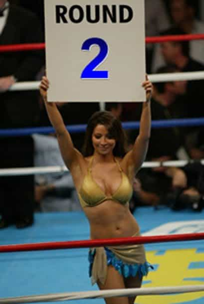

< < < Back
The Benefits Of Not Masturbating – Return Of Kings
The last time I masturbated was February 24th.
Why? Because before that, I had several streaks of not masturbating — including one for 165 days — and for me the pluses far outweighed the minuses. It was no cake walk and there were definitely some times where I wanted to give up. But these days I avoid it for as long as I can.
The Beginning
As we all do from time to time, I was bored one day browsing the internet and came across the TED Talks presentation on the negative effects of masturbation and porn. I know that you should take these TED Talks with a grain of salt but this one grabbed my attention. After reading through some more articles and personal accounts of the “no fap” challenge, I said what the hell let me try it out. Here’s my actual contemporaneous log from my times on the challenge. Please note that some log entries will just reiterate thoughts from previous entries, but I wanted to leave it as close to unedited as possible:
Round 1 – Day 6

I’m 6 days in and it’s quite torturous. To the point I had to invite a regular over tonight instead of going out for fresh because I feel like if I don’t nut soon I will die.
Round 1 – Day 22
Almost caved yesterday. So far, I can’t tell if it’s this or something else, but I’ve been attracting the hottest girls of my life. On the flip side, I’ve been having more difficulty in closing the deal. Not sure how much of this relates.
It gets way worse when you have a break in action from regular girls. I’m on a voluntary dry streak of sorts, in that I have 2 girls in rotation but keep avoiding them to try and get new and fresh.
Round 1 – Day 27
My previous results are growing. My ability to attract girls and especially higher quality ones has skyrocketed, though it could just be random luck. My conversational and flirting skills are the best they’ve been. But my closing skills have gone to shit. I have no idea why. This is very frustrating. I’ve now had several girls out on dates/back at my place and can’t close, whereas before closing was my easiest part.
Round 1 – Day 28
It’s over — I broke down. Back to Day 1…
Round 2 – Day 31

I went 27 days before breaking down, started again and now am on day 31. So one wank in about 2 months. Here’s what I’ve noticed:
- I have a lot more extreme emotions, which for me is still very muted. I don’t really have mood swings.
- I’m rock hard with the slightest of touch from a girl.
- I think about sex a LOT.
- Most importantly my ability to interact with girls has skyrocketed. Don’t know if it’s this or what, but I find myself being able to carry on conversations with girls with ease.
- I give much less of a shit about 1) rejection, and 2) any particular girl that I’m dating/trying to bang.
- I’ve had a more difficult time closing on dates. Not sure why.
- That one time I did jerk it, I felt so damn happy for about 5 days afterwards. Like I was just flying high in happiness. This was quite odd, I don’t think I was this happy in years.
- I’ve been approaching a lot more, probably because I’m outrageously horny.
- I’m more of a dick to girls, which works initially but then I push it too much and has been backfiring of late.
- Porn now almost freaks me out a bit. It’s weird I know, but not in the sense that oh my god what are they doing, but that since I don’t view it regularly it is a bit shocking to my eyes. I’ve only seen it randomly and not on purpose.
- I’m actually less efficient with work, mostly because how to bang and who to bang next dominate my thoughts.
Round 2 – Day 40
I think I have to stop this. As much as it improves my mental clarity and makes me aggressive as shit, yesterday I had sex for the first time sober since starting this thing and I nutted in 10 seconds – no exaggeration. I had a condom on too. I’ve never blown that fast in my life. When I wank consistently it takes all the concentration in the world for me to nut. At least then I can give the girl a good pounding.
Not sure what the answer is but I can’t be so sensitive to blow in seconds. Jesus.
Round 2 – Day 65
The desire to jerk it has completely subsided. I never even think about it anymore. My ability to approach, conversate and bang women has increased substantially. I actually feel like a different person, more confident. Of course it’s hard to directly correlate my success to this, but I’m sure it helps. The only negative I’ve noticed so far is the one time I had sober sex I blew in less than 10 seconds and had to pretend I was still going…and this was with a condom on. The desensitization associated with masturbation was over-corrected. When I drink and have sex though I’m fine.
Nonetheless a very positive experience for me and coupled with the lack of desire to masturbate honestly I’m not sure when I’ll jerk it again in the near future.
Round 2 – Day 68
I’m past two months now and if I don’t approach a girl in about 48 hours or so I start twitching. It insanely boosts your desire to go out and talk to girls, I can’t even describe it. Actually yes I can, I feel like a crack addict when I go so many days without interacting with a girl – I simply fiend it. Before, I could go all week and just be content with the weekend approaches/nights out.
Round 2 – Day 77
I almost broke down on Tuesday. Really struggled but pushed through. When I went out that night I literally was walking around going I need to have sex with someone. Happened with third girl I spoke to. It really makes a difference after you pass a certain point.
Round 2 – Day 97
Can’t believe I got this far. It’s really really hard sometimes.
Just looked at some stats and I’ll give some general observations. I started early June. Prior to that for 2012, I banged out 10 girls. So about 2 a month. Since I started, I’ve banged 12 girls, including 6 in August. A lot more ONS in the post-fap period. Some observations now:
- I absolutely cannot handle not talking to a girl for more than 2 days. Like a crackhead, I get an itch to approach after about 48 hours.
- I care almost exclusively about sex. This has helped and hurt me. It has helped because my goal is always sex. I don’t care about dates, I don’t care about conversation, everything is calculated to how I can get the sex fastest. This helps with girls that are DTF I guess, however I’m sure other girls that maybe would want to date a few times would be turned off. I’ve noticed more SNL and less 2nd dates if that makes sense. Like it’s now or never.
- I went from only being able to nut without a condom after 30 minutes, to twice nutting in less than 10 seconds with a condom. That’s actually quite embarrassing. But that only happens if I’m dead sober and haven’t had sex for a while. If I drink I’m fine.
- Within probably 2 minutes of nutting I’ll be good to go again. Sometimes I won’t even go soft, happened once. The girl was shocked and happy.
- The slightest stimulation and I’ll be as hard as a rock. So makeout, I’m hard. Speed bump in road, I’m hard.
- I’m more honeybadger style, in that I don’t give a shit and approach a lot more. Also, I care a lot less about any particular goal because I’m so focused on sex as opposed to the girl herself. Literally when I’m at a bar, when I see a girl my first thought is can or would I have sex with her. Not what do I open with, who is she here with, is she drunk, etc. It’s all secondary.
- I feel like my productivity has DECREASED actually. This is because of the amount of time I spend thinking about sex. However, this could be a byproduct of my lack of girls in rotation recently. I’ve been moving around and traveling a lot so it’s hard for me to keep anything going. I’ve lost girls because they either move on to someone who will date them, or I’m just not around enough and they get impatient and leave.
- I’ve had insane streaks, including a different girl in my bed for 9 straight nights (not all sex), my first threesome, and 6 girls in a month. Never had that before.
- I feel more confident.
- I really don’t give a shit about many things. In a good way, as in I don’t let outside thoughts/opinions influence my actions.
- My patience for LMR has gone way down and as a result I’m giving up sooner than I should.
But I’m struggling now. As good as August was to me I came back sick after labor day, have not gone out as much and messed up some easy layups last weekend so I’m on almost 2 weeks without sex. Have 3 dates lined up this week so we’ll see what happens.
Round 2 – Day 103
I think I’m going to give this up. I’m just way too quick on the release everytime I’m with a girl now sober, as opposed to before I’d last forever. Not sure what to do, though my approaching has gone way up and I’m much better at getting conversations going.
Round 2 – Day 107
- I’m insanely horny. Like sometimes I just can’t take it anymore I want to fuck so badly.
- This makes me approach a lot more and I have a lot stronger interactions with the girls.
- This has hurt my ability to overcome LMR. When I get so close I think I’ve turned into some sort of desperate/aggressive guy that stops them from going forward and turns them off. Before this I was pretty damn good at overcoming LMR.
- I’ve had a lot more SNLs.
- The slightest touch or makeout and I’m hard as a rock, from lack of stimulation.
- Worst problem as I just mentioned, I nut way too quickly now unless I’m hammered. This is not cool.
- I spend way too much time thinking about sex and it takes away from work.
Round 2 – Day 132
It’s getting very hard. I now fantasize about fapping… like when I will do it, where I will be, the porn I will watch, etc. Not sure how much longer I can hold out. Everything makes me super hard these days. I have banged a lot more girls since I started this though so there’s something to be said for that.
Round 2 – Day 153
Never thought I’d go this long… I’ve been close to breaking a few times already but somehow get distracted and continue on my fapless ways.
Round 2 – Day 165. THE END
Alright, so I went 165 days and decided to end it last night. Immediately I regretted it. Here’s what I was like towards the end:
- The most objectively indifferent and aloof I’ve ever been towards girls. I honestly could not care less about any of them.
- Most sex I’ve ever had on a consistent basis. This was towards the end, have two girls on rotation and the occasional SNL here and there.
- Most girls I’ve banged in a 165 day time span (19 different girls)
- Most aggressive I’ve ever been in terms of going out and approaching.
- Most scatterbrained I’ve been with respect to work and desire to work.
- Least I’ve ever worked out since I started going to the gym 14 years ago.
As soon as I fapped my mind rushed in with tons of beta thoughts for whatever reason. It scared me. I wanted to sleep over one of my rotation girl’s places. I wanted to stop going out and be a good guy. Like I literally was being brainwashed.
Obviously I realize that the direct sole variable is not fapping or not fapping, but indirectly it is. I probably had so many bangs because I was so aggressive in going out, but that was because I was not fapping so my only release was through a girl – talk about motivation.
Not sure if I’m going to go another 5.5 months or whatever, but I’m definitely not going back to my ways of before (few times a week).
The Next 30 Days
Pretty interesting update I have. It’s been about a month since I gave up the NoFap (“NF”) challenge and jacked off and have been doing so since then. I’ve decided I’m going right back to NF, and here’s why:
- I’m still relatively indifferent about girls. However, I did let my guard down with some slut. I don’t think I would have been as duped while in NF phase.
- My quantity and frequency of sex is still very high, mostly because I’m fucking my roommate so she’s always there. However, I’m not happy with that situation to be frank. Kills my ability and desire to go out a bit. Nonetheless I still have brought girls back home, though…
- In this month since giving up NF, I’ve banged a total of zero new girls. None, zilch. I went from roughly 3.5 new bangs/month to 0. Horrible.
- I’m considerably less aggressive. Admittedly, it is due to the fact that I had two girls on rotation for a lot of the time. But sometimes I could just walk out and go approach some girls and rather chose to stay in and jack off, such as today.
- A little bit more focused on work to be honest.
- Started working out again, but I’ve actually put on about 5lbs (0% muscle). Need to really get in shape.
The beta thoughts continued on. I was very comfortable with my roommate and just having sex on demand. Many nights I’d give up my ability to mack, though largely it was so my friends could try to bang her friends, in that I’d offer to have our groups meet up but knowing my night would then be over. Previously I was ruthless and would never do that.
I started feeling burnt out and wanted to stop gaming so much. I wonder if my lessened desire also led me to believe I was getting burnt out. I actually never felt that way beforehand.
Take it for what you will, but in my eyes there is no doubt I was much better – game wise at least – during the NF phase.
Conclusion
February 24th was my last breakdown, so currently I’m at another 4+ months. I know I can’t go forever but currently I have no desire to masturbate. And in looking back at my times and coinciding them with my game success there is one other benefit I realized… the times when I’ve lowered my standards, brought back home girls that I wasn’t too proud of, have all been within days or weeks of my breakdowns. You would think the fact that if your only form of release is from a live girl your standards would decrease. In my case at least, it was the complete opposite.
Everyone is different and I realize that what may work for one may not work for others. But this shit worked for me, and it worked wonders. I would recommend every guy give this at least one shot.
Read Next: The Easiest City In The World To Get Laid